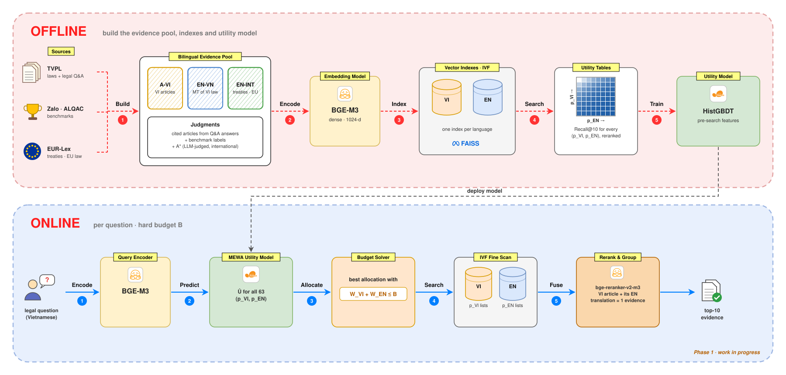

MEWA — Budgeted Vietnamese–English Legal Evidence Retrieval¶
Status: in development
The Phase 1 pipeline is implemented. The first run on real data is in progress, so there are no results yet.
Description¶
Answering a Vietnamese legal question often needs evidence that is not in Vietnamese: the English version of a Vietnamese law, a treaty Viet Nam is bound by, or an EU regulation that a Vietnamese decree implements. MEWA (Marginal Evidence Work Allocation) is the retrieval layer of a cross-lingual legal RAG system. For each question, before searching, it decides how to split a fixed ANN search budget between a Vietnamese index and an English index.
Challenge¶
- Evidence is split across languages. About 15.6k Vietnamese legal documents are listed with an English version on TVPL, and treaty and EU law exists mainly in English. Searching only Vietnamese misses this evidence; searching everything for every question multiplies the cost.
- Questions differ. Most are fully answered by Vietnamese law, and a few need English sources. A fixed split wastes budget on both groups.
- A single multilingual index is not a fix. Its inverted lists tend to be language-pure, so a global probe order under a tight budget ends up favouring one language.
Approach¶
For each question, choose how many IVF lists to probe in each index, pVI, pEN ∈ {0, 1, 2, 4, …, 64}:
argmax Û(q, p_VI, p_EN) subject to W_VI(p_VI) + W_EN(p_EN) ≤ B
- W is the exact fine-scan work: the summed size of the probed lists, known before the scan.
- U is Recall@10 of evidence after union → rerank → grouping by article. A Vietnamese article and its English translation count as one piece of evidence.
- Û comes from a gradient-boosted model that sees only pre-search signals: coarse centroid scores, list sizes, the query embedding and lexical cues. The best feasible allocation is found by exact enumeration over the 63 options.
- Baselines: static splits, separable / additive and ranking models, a single global index, and the per-question oracle.
Architecture¶

- Offline: builds a bilingual evidence pool with judgments from Vietnamese laws, legal Q&A, benchmarks and EUR-Lex. The pool is encoded with BGE-M3 and indexed in one Faiss IVF index per language. Searching at every probe depth gives a utility table per question, on which the utility model is trained.
- Online: for each question, MEWA predicts the utility of all 63 allocations and picks the best one within budget B. It then scans both indexes, reranks, and merges a Vietnamese article with its English translation into a single piece of evidence. Answer generation is Phase 2.
Data: Vietnamese legal documents and legal Q&A from TVPL, Zalo / ALQAC benchmarks for out-of-domain tests, and EUR-Lex for English evidence.
Tech stack: Python · Faiss IVF · BGE-M3 · bge-reranker-v2-m3 · VinAI Translate · scikit-learn · Qwen2.5 on vLLM
Status¶
- Research plan and utility-model formulation
- Phase 1 pipeline: data → indexes → utility model → evaluation
- Pilot run on real data (in progress)
- Full run, final evaluation, ablations
- Phase 2: legal retriever adaptation and answer generation